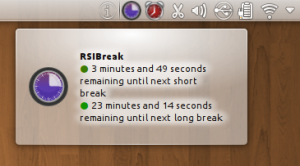

4th of April, time for March wrap-up...
After a few improvements like adding a synchronize feature, +/- select buttons for items in the thumbnail bar and highlighting of the current item in the thumbnail bar, I decided it was good enough to be merged to master. There are still a few adjustments I want to do, but nothing too intrusive.
Compare two images Or go crazy and compare 6 of them... (I hope you have a big screen!) Compare mode works in fullscreen tooI also wrote a new post for my series on common UI errors in KDE applications: Being GNOME friendly. It received a mixed reception, but given the subject, that was to be expected.
Note that you should also get a bit more usable space when using Oxygen theme, even if it reduces the effects of double-margins.
I also resumed my use of RSIBreak, "thanks" to the return of my left wrist pain. This led me to port it from QSystemTrayIcon to KStatusNotifierItem. Patch is in, you can now enjoy nicer tooltips and mouse-over effects (and even get a fully functional RSIBreak if, like me, you find yourself running Unity 2D in a nested session from within a KDE session, but I guess it's not a common situation...)
For April I'd like to make the latest adjustments to Gwenview compare mode and maybe start working on some metadata-related bugs... I am not too sure yet, we'll see. I am also attending KDE UX Sprint in Berlin, which I am looking forward to. Who knows what will come out of it?
So, not much planned, but that does not mean I plan to slack! Don't worry, your contributions will be put into good use :)
{kind=link}
{kind=link}
{kind=link}
{kind=link}
{kind=link}